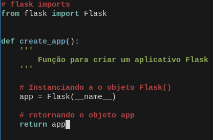
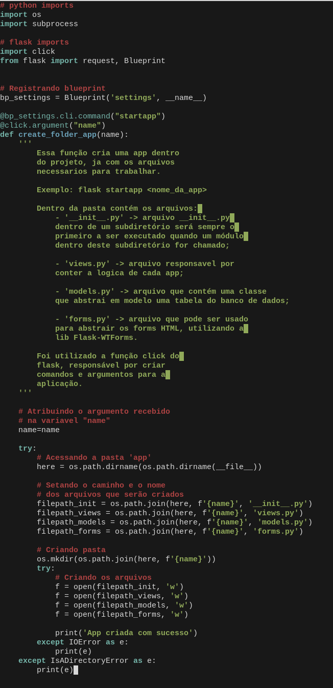
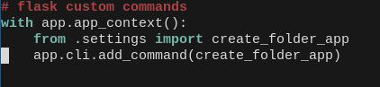
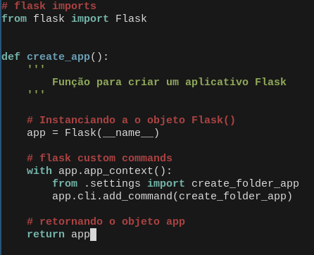

Nesse artigo, iremos explorar o CLI do micro-framework flask. Para quem não conhece, o flask é um framework web, está para o python assim como o express está para o node.
Entendendo o CLI...
- Ao instalar do Flask, automaticamente, será instalado uma interface de linha de comando Click, em seu virtualenv (ambiente virtual);
- Click é um pacote feito para criar comandos personalizados para sua aplicação Flask escrevendo o minimo possivel.
# flask imports
from flask import Flask
def create_app():
''' Função para criar um aplicativo Flask '''
# Instanciando a o objeto Flask()
app = Flask(__name__)
# retornando o objeto app
return appSemelhante aos comandos que o framework django possui para criar super-usuarios, criar apps, etc. o Click possibilita fazermos isso e o melhor é que podemos ir além e criar nossos proprios comandos, agilizando o desenvolvimento de nossos projetos.
Dependencias
- Virtualenv
- Flask
OBS: Irei partir da premissa de que você ja esta familiarizado com a configuração do ambiente e instalação das dependencias.
Sua estrutura de pastas deve ficar parecida com a minha:

Dentro do arquivo __ init __.py escreva o codigo da seguinte forma:

Agora, dentro do arquivo settings.py iremos criar o nosso comando. O mesmo será responsável por criar apps em nossa aplicação, sem precisarmos criar arquivo por arquivo.
Contextualizando...
Como flask é um micro-framework, o mesmo vem apenas com o basico para criarmos uma aplicação web, dessa forma, não temos tantas ferramentas prontas, como o django, por exemplo. No django, ao executarmos o comando django-admin startapp criamos uma app dentro do diretorio em que você esta, contendo dentro dessa app os arquivos necessários para que possamos trabalhar, agilizando o processo de criação de nossa aplicação.
Dito isso, iremos fazer algo parecido para nossa aplicação flask, sem muita complexidade e de forma intuitiva, para que vocês possam ver como funciona o CLI do Flask.
Dessa forma, dentro do arquivo settings.py, iremos inserir o seguinte codigo:

Resumidamente, o codigo acima cria uma app dentro da pasta app do projeto, contendo os arquivos comumente usados, sendo eles, __ init __.py, views.py, models.py, forms.py.
Agora, vamos voltar para nosso arquivo __ init __.py e adicionar o seguinte trecho de código:

O arquivo __ init __.py completo ficará assim:

Agora, vamos exportar nossas variaveis de ambiente, para que a aplicação flask funcione corretamente. Siga os passos:
- Em seu terminal, dentro da pasta projeto, digite consecutivamente:
export FLASK_APP=project
export FLASK_ENV=Development
export FLASK_DEBUG=TrueFeito isso, ja podemos executar o seguinte comando no terminal, para, de fato, utilizarmos nosso comando:
flask startapp projeto/usuariosO comando acima irá criar nossa app dentro da pasta projeto.
Após executar o mesmo, a seguinte ordenação de pasta será criada:

Pronto, agora ja conseguimos agilizar um de nossos procedimentos diarios no desenvolvimento de uma aplicação flask.
Considerações finais
O intuito desse artigo foi mostrar a liberdade que temos com o flask e o quanto o mesmo é expansível a modo de facilitar a nossa vida no dia a dia.